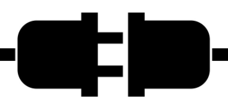

In this short tutorial, you will see how to make a socket connection in C# between a client and a server.
Multiple clients cannot be handled out of the box, and you must use multi-threading, similarly to what you were taught in SDJ2.
This is, however, not covered in this tutorial.
The below code shows a simple server program. It is an echo server, so it reads a string from the client, and returns it back to the client.
class Program {
static void Main(string[] args) {
Console.WriteLine("Starting server..");
IPAddress ip = IPAddress.Parse("127.0.0.1");
TcpListener listener = new TcpListener(ip, 5000);
listener.Start();
Console.WriteLine("Server started..");
while (true)
{
HandleOneClient(listener);
}
}
The above is just a simple main method, starting a server socket, and handling incoming client requests.
Line 5: The IP address, the server should use, is specified. This example runs both client and server and localhost.
If you wish to connect to the server form a different pc, you will need to look up the server pc's actual IP address.
Line 6: This is the server socket, it is a class, which listens for incoming TCP connections.
The first argument is the IP address. The second is the port number.
Line 7: The listener is started, now it is ready for incoming requests.
Line 11: The functionality of accepting and handling incoming requests is done in a while(true) loop. One client is handled at a time.
Line 13: Here we call a method to handle one client. When that client is handled, the method exists, goes back to the while-loop, and starts on the next client. See client-handling below.
private static void HandleOneClient(TcpListener listener)
{
using TcpClient client = listener.AcceptTcpClient();
Console.WriteLine("Client connected");
using NetworkStream stream = client.GetStream();
// read
byte[] dataFromClient = new byte[1024];
int bytesRead = stream.Read(dataFromClient, 0, dataFromClient.Length);
string s = Encoding.ASCII.GetString(dataFromClient, 0, bytesRead);
Console.WriteLine(s);
// respond
byte[] dataToClient = Encoding.ASCII.GetBytes($"Returning {s}");
stream.Write(dataToClient, 0, dataToClient.Length);
}
}
Line 3: A new connection from a client is accepted. This results in a TcpClient object, which represents the connection to the client. Notice the using keyword in front of the client variable. This is used to make sure the client is correctly disposed/closed, when the end of the current scope is reached.
Line 6: The NetworkStream is acquired. This stream is used for reading and writing from/to the client. Unlike Java, where you have an object for input, and another for output. Notice again the using keyword.
Line 9: Data is sent as bytes. We define here a byte array to hold the incoming data, a so-called buffer array. Initially there's allocated 1024 bytes of space. If larger objects are sent, you will not receive everything. The simple solution is just to set this number high enough to not encounter problems. More elegant solutions exists, where you figure out how many bytes will be sent, before allocating the necessary number of bytes.
Line 10: Here we read the incoming data from the client. The result is how many bytes were read from the client.
The arguemtents are:
Line 11: The buffer array is converted to a string. It is here assumed the encoding is ASCII. Other encodings can be used, e.g. UTF8, for a larger character set.
The arguments are:
We have now received the data from the client, and converted it to a string.
This is a very simpel example. For more complex client-server interactions, you would usually want to send some kind of object. That is done by first converting that object, serializing it, to either json (a string-representation of the object) or to a byte array. This format can then be sent over the socket connection.
Line 15: We want to respond to the client, by echoing back the data previously received. That data is "Returning {s}"
Where s is the string from the client.
The data is converted to a byte array, again using an encoding, in this case ASCII.
Line 16: The byte array is sent to the client, the arguments are:
We do not have to manually close neither the client nor the stream, because we applied the using keyword. Any variables declared with the using keyword will automatically be disposed at the end of the surrounding scope.
The method is finished handling one client. It exists, returns to the while loop, starts over, and handles a new client.
Over and over and over and...
This is the client side of the example. It sends a string to the server, and receives a string back again.
You will notice similarities to the server with regards to reading and writing data.
Below is a main method with the client program:
class Program
{
static void Main(string[] args)
{
using TcpClient client = new TcpClient("127.0.0.1", 5000);
using NetworkStream stream = client.GetStream();
byte[] dataToServer = Encoding.ASCII.GetBytes("Hello from client");
stream.Write(dataToServer, 0, dataToServer.Length);
byte[] dataFromServer = new byte[1024];
int bytesRead = stream.Read(dataFromServer, 0, dataFromServer.Length);
string response = Encoding.ASCII.GetString(dataFromServer, 0, bytesRead);
Console.WriteLine(response);
}
}
Line 5: We instantiate a new TcpClient, which makes a connection to a server located at the provided IP address and port number, the two constructor arguments. Notice again the using keyword, so that the client object is disposed when no longer used.
Line 7: Obtaining the stream.
Line 9: The message to be sent to the server, Hello from client, is converted to a byte array.
Line 10: The byte array is sent to the server.
Lines 12-14: Identical to how the server side read from the client. Here we just read from the server instead.
Line 15: Finally, printing out the result.